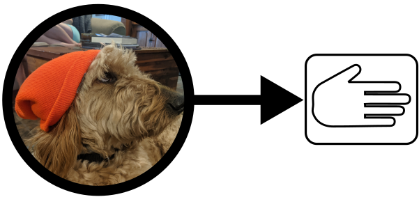

(originally posted on Medium)
SpiffWorkflow allows your Python application to process BPMN diagrams (think of them as very powerful flow charts) to accomplish what would otherwise require writing a lot of complex business logic in your code. You can use these diagrams to accomplish a number of tasks, such as:
- Creating an online questionnaire which changes depending on the answers to previous questions
- Building a complex approval process that needs to be handed off between multiple people
- Allowing non-developers to make iterative changes to the flow of an application over time
SpiffWorkflow can do all of this while drastically improving communication within multidisciplinary teams, allowing more people to contribute to your application and making it more resilient to changing requirements.
Visualizing Code is the Future
Visual software development environments are key for handling many of the business problems we need to solve over the coming decade. While there are tons of marketing sites touting “low-code” solutions of nominal value, there are a handful of elegant real-world success stories. I’ve seen them most clearly through the eyes of my son. His introduction to programming was Scratch, where basic programming constructs work like building blocks you can stack together. It feels a little like playing with Legos; you can build chunks and then stick them together in different ways to see what happens. From there my son moved on to Blender, which uses visual tools for the complex process of building 3D animations, taking a multidisciplinary problem and providing intuitive visual representation of what is definitely programming. Low-Code using visualization tools is very much a real thing, and it will reshape the way we work with computers in the future to solve complex problems.
What are Workflows and BPMN
The term “Workflow” can mean many things in software. Our focus is on Business Processes — such as the complex approval process necessary for launching a medical research study at a university (one of our core use cases at the moment). There is a well-established standard for visualizing business processes called BPMN (Business Process Modeling Notation) that looks a heck of a lot like a flow chart (see image below). Version 2.0, published in 2010, was designed to be executable. This is important.
![Not to delve too deeply, but the arrows in the diagram above dictate motion from one task to the next. The boxes with people are User Tasks, and are often powered by user interfaces that allow real people to provide input. The X’s are crossroads where different paths can be taken. The script tasks (with the piece of curvy paper) are where we can inject brief bits of code to make calculations and call out to other software systems and APIs. This is a very small example of all that is possible within the enormous 538-page BPMN standard, but it is a valid example, and demonstrates that powerful diagramming tools can still be intuitive.](/posts/articles/visual_workflows/lowcode_diagram.png)
Not to delve too deeply, but the arrows in the diagram above dictate motion from one task to the next. The boxes with people are User Tasks, and are often powered by user interfaces that allow real people to provide input. The X’s are crossroads where different paths can be taken. The script tasks (with the piece of curvy paper) are where we can inject brief bits of code to make calculations and call out to other software systems and APIs. This is a very small example of all that is possible within the enormous 538-page BPMN standard, but it is a valid example, and demonstrates that powerful diagramming tools can still be intuitive.
What’s great about BPMN is that you can potentially create software even a CEO can understand. Imagine having a board meeting where everyone around the table actually knew what they were talking about. This is the glorious promise of BPMN. A diagram that doesn’t roughly abstract the general meaning of what we think the software does. It’s a diagram that IS the software.
What is SpiffWorkflow
BPMN diagrams don’t just run. You need an interpreter that is capable of executing the diagram, in the same way that you need to have the Python interpreter to run a Python program. SpiffWorkflow is an interpreter for BPMN that makes the diagram runnable as a part of your Python application.
Please check out our Features to get a better sense of what is possible with these diagrams, then head over to the Get Started Guide, which can show you how to download and test out SpiffArena (a new web application built around SpiffWorkflow) and build your first executable diagrams.